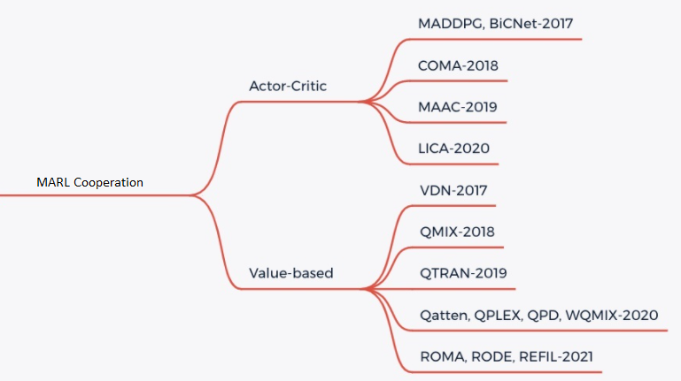

多智能体强化学习¶
问题定义与研究动机¶
在很多现实场景中，人们需要控制同时存在的多个智能体（agent）来完成特定任务，如交通信控，机器人协作，自动驾驶和多人网络游戏等。因此，对强化学习的研究逐渐从单智能体领域延伸了到多智能体强化学习（Multi-agent Reinforcement Learning, MARL）。近年来，深度强化学习在多智能体环境和游戏中展现出了巨大的潜力，例如星际争霸 StarCraftII 的子环境 SMAC ， 足球游戏 Gfootball ， 以及 Carla 等自动驾驶的环境。

在MARL中，策略控制多个智能体同时与环境交互，其目标仍然是最大化能够获得的累积回报。此时，环境全局状态（global state）的转移以及奖励值（reward）是和所有智能体的联合动作（joint action）而非单个智能体的动作相关的。因此在策略的学习过程中，每个智能体的策略的更新需要考虑其他智能体的当前策略。

在该图中，system表示多智能体环境 表示第i个智能体， 表示第i个智能体采取的动作， 表示第i个智能体获取的局部奖励。 在训练过程中，各个智能体分别与环境进行交互，系统会反馈回联合奖励。
总的来说，多智能体强化学习与单智能体强化学习的主要区别在于以下四点：
环境的非稳定性：智能体在做决策的同时，其他智能体也在采取动作，而环境状态的变化与所有智能体的联合动作相关。因此对于单个智能体的动作的价值评估会随着其他智能体的动作变化而变化，这会导致在MARL训练中的非平稳性(non-stationary)。
智能体获取信息的局限性：在一些环境中（例如SMAC），每个智能体不一定能够获得全局的状态信息，而是仅能获取局部的观测信息，但无法得知其他智能体的观测信息、动作等信息。
个体的目标一致性：各智能体的目标可能是最优的全局回报，也可能是各自局部回报的最优。
可拓展性：大规模的多智能体系统可能涉及到高维度的状态空间和动作空间，这对于模型表达能力，算法的学习能力和真实场景中的硬件算力有一定的挑战。
研究方向¶
对于 MARL cooperation 任务来说，最简单的思路就是将单智能体强化学习方法直接套用在多智能体系统中，即每个智能体把其他智能体都当做环境中的因素，仍然按照单智能体学习的方式、通过与环境的交互来更新策略；这是 independent Q-learning， independent PPO方法的思想，但是由于环境的非平稳性和智能体观测的局部性，这些方法很难取得不错的效果。
目前 MARL cooperation 主要是采用 CTDE(centralized training and decentralized execute) 的方法，主要有两类解决思路， Valued-based MARL和Actor-Critic MARL。具体可以参考下图：
{kind=link}
Valued-based MARL
对于 Valued-based MARL， 主要的思路是将全局的 reward 值分解为可以供各个 agent 学习的局部 reward 值，从而便于智能体的训练。主要有 QMIX， WQMIX， QTRAN 等方法。
QMIX: QMIX 的核心是学习一个单调性的Q值混合网络，每个智能体的Q值经过非线性变换求和生成 。具体可以参考 QMIX 2
WQMIX: WQMIX 的核心与 QMIX 相同，也是学习一个Q值混合网络，但其通过加权投影的方法学到可以突破单调性限制的Q值混合网络。具体可以参考 WQMIX 1
QTRAN: QTRAN 通过学习独立 action-value 网络,混合 action-value 网络，全局 state-value 网络来突破单调性限制。具体可以参考 QTRAN 4
QPLEX: QPLEX 通过分别对联合 Q 值 和各个 agent 的 Q 值 使用 Dueling structure 进行分解，将 IGM 一致性转化为易于实现的优势函数取值范围约束，从而方便了具有线性分解结构的值函数的学习。具体可以参考 QPLEX 10
Actor-critic MARL
对于 Actor-critic MARL， 主要的思路是学习一个适用于多智能体的策略网络。主要有 COMA, MAPPO 等方法。
未来展望¶
对于一些 Agent 数量更多，更加复杂的环境如 Multi-Agent Petting Zoo 的一些子环境中，存在近百个 agent , 单纯的 MARL cooperation 可能无法起到很好的效果，需要各个 agent 之间实时通信以共享信息
对于一些实际情况，比如自动驾驶中，获得实时的全局状态所需的带宽压力过大，尤其是当车辆数量较多时，获取实时的全局状态几乎不可能，也就无法采用 CTDE 的方法进行训练
在以上 1, 2情况下，可以采用多个智能体之间进行通信 （MARL Communication） 的办法来进一步提高学习效率。
在未来， MARL 可以与 Offline RL 技术结合，从而更进一步提高样本效率。同时， MARL 也可应用于智能体行为分析，智能体建模，人机协作等多个领域。
参考文献¶
- 1
ashid, Tabish, et al. “Weighted qmix: Expanding monotonic value function factorisation for deep multi-agent reinforcement learning.” arXiv preprint arXiv:2006.10800 (2020).
- 2
Tabish Rashid, Mikayel Samvelyan, Christian Schroeder de Witt, Gregory Farquhar, Jakob Foerster, Shimon Whiteson. Qmix: Monotonic value function factorisation for deep multi-agent reinforcement learning. International Conference on Machine Learning. PMLR, 2018.
- 3
Peter Sunehag, Guy Lever, Audrunas Gruslys, Wojciech Marian Czarnecki, Vinicius Zambaldi, Max Jaderberg, Marc Lanctot, Nicolas Sonnerat, Joel Z. Leibo, Karl Tuyls, Thore Graepel. Value-decomposition networks for cooperative multi-agent learning. arXiv preprint arXiv:1706.05296, 2017.
- 4
Kyunghwan Son, Daewoo Kim, Wan Ju Kang, David Earl Hostallero, Yung Yi. QTRAN: Learning to Factorize with Transformation for Cooperative Multi-Agent Reinforcement Learning. International Conference on Machine Learning. PMLR, 2019.
- 5
Jakob Foerster, Gregory Farquhar, Triantafyllos Afouras, Nantas Nardelli, Shimon Whiteson. Counterfactual Multi-Agent Policy Gradients. In Proceedings of the Thirty-Second AAAI Conference on Artificial Intelligence, 2018.
- 6
Yu, C., Velu, A., Vinitsky, E., Wang, Y., Bayen, A., and Wu, Y. The surprising effectiveness of mappo in cooperative, multi-agent games. arXiv preprint arXiv:2103.01955, 2021.
- 7
Jayesh K. Gupta, Maxim Egorov, Mykel Kochenderfer. Cooperative multi-agent control using deep reinforcement learning. International Conference on Autonomous Agents and Multiagent Systems, 2017.
- 8
Ryan Lowe, Yi Wu, Aviv Tamar, Jean Harb, Pieter Abbeel, Igor Mordatch. Multi-agent actor-critic for mixed cooperative-competitive environments. arXiv preprint arXiv:1706.02275, 2017.
- 9
Mikayel Samvelyan, Tabish Rashid, Christian Schroeder de Witt, Gregory Farquhar, Nantas Nardelli, Tim G. J. Rudner, Chia-Man Hung, Philip H. S. Torr, Jakob Foerster, Shimon Whiteson. The StarCraft Multi-Agent Challenge. arXiv preprint arXiv:1902.04043, 2019.
- 10
Wang, J., Ren, Z., Liu, T., Yu, Y., and Zhang, C. Qplex: Duplex dueling multi-agent q-learning. arXiv preprint arXiv:2008.01062, 2020.